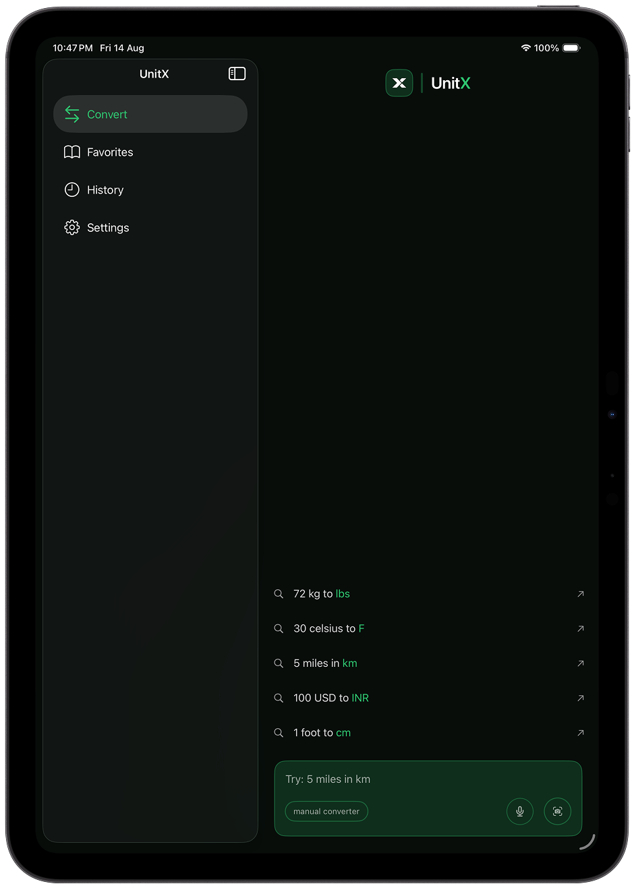
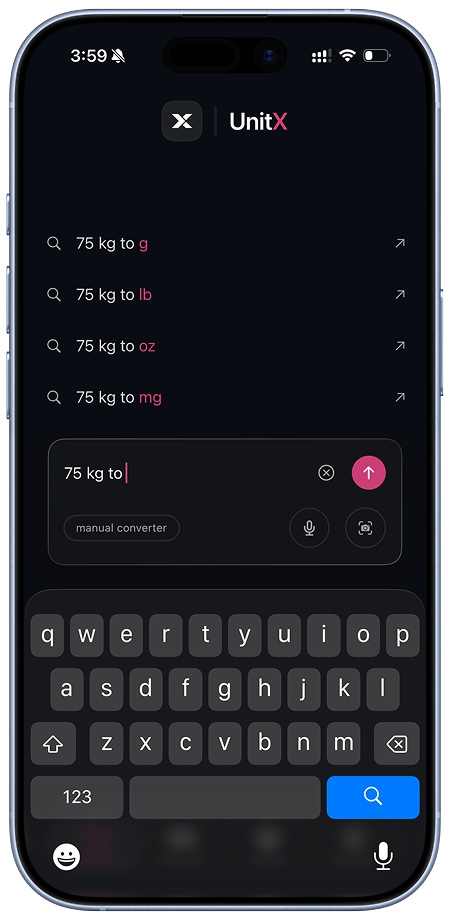

Ask naturally
Start with the words you already have: a value, a unit, and a goal.

Smart unit converter
A calmer way to turn everyday questions into answers—whether you type naturally, choose exact controls, or scan the number in front of you.
iPhone & Apple WatchNatural language inputCamera assisted


Why UnitX
UnitX keeps the common path immediate and adds precision only when it helps.
Start with the words you already have: a value, a unit, and a goal.
Switch to clear category and unit controls when the request needs to be explicit.
Use camera entry to turn printed values into a useful starting point.
Keep useful conversions available from your wrist when your phone is not in hand.
FAQ
UnitX is built for everyday unit conversions, from measurements and weights to the quantities you need in the moment.
Yes. Start with the value, unit, and answer you want in plain language, then refine it only if needed.
UnitX also offers clear category and unit controls when a conversion needs to be specific.
Camera-assisted entry can turn a printed value into a useful starting point.
Yes. UnitX keeps useful conversions close when your phone is not in hand.